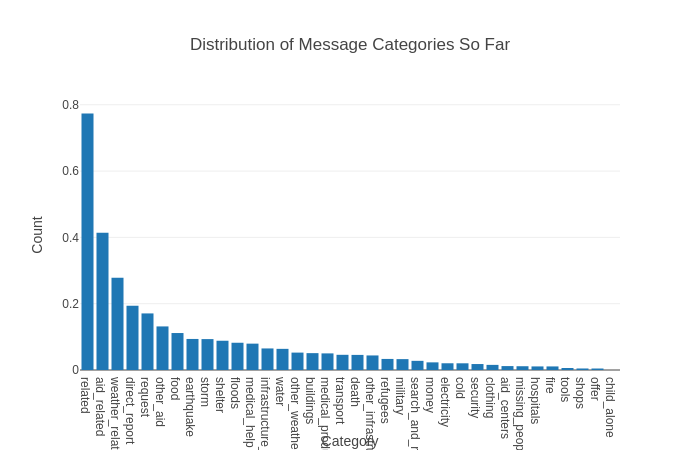

My projects on statistical machine learning methods focused on a diverse set of topics, and I have broadly divided them into following 3 categories.
Category 1 ) Learning from Demonstration
Topics: Learning from Demonstration, Imitation Learning, Inverse Reinforcement Learning
-
Online Inverse Reinforcement Learning Under Occlusion.
Inverse reinforcement learning (IRL) is the problem of learning the preferences of an agent from observing its behavior on a task. While this problem is witnessing sustained attention, the related problem of online IRL– where the observations are incrementally accrued,yet the real-time demands of the application often prohibit a full rerun of an IRL method – has received much less attention. We introduce a formal framework for online IRL, called incremental IRL (I2RL), and a new method that advances maximum entropy IRL with missing training data, to this setting. Our formal analysis shows that the new method has a monotonically improving performance with more demonstration data, as well as probabilistically bounded error,both under full and partial observability.
Paper Presentation (PPT) Video Code -
Extension of above project from conference paper to a journal paper
Journal Paper -
Maximum Entropy Multi-Task Inverse Reinforcement Learning.
Multi-task IRL allows for the possibility that the expert could be switching between multiple ways of solving the same problem, or interleaving demonstrations of multiple tasks. The learner aims to learn the multiple reward functions that guide these ways of solving the problem. We present a new method for multi-task IRL that generalizes the well-known maximum entropy approach to IRL by combining it with the Dirichlet process based clustering of the observed input. This yields a single nonlinear optimization problem, called MaxEnt Multi-task IRL, which can be solved using the Lagrangian relaxation and gradient descent methods.
Paper Presentation (PPT) Video Code -
A Survey of Inverse Reinforcement Learning: Challenges, Methods and Progress.
Inverse reinforcement learning is the problem of inferring the reward function of an observed agent, given its policy or behavior. Researchers perceive IRL both as a problem and as a class of methods. By categorically surveying the current literature in IRL, this article serves as a reference for researchers and practitioners in machine learning to understand the challenges of IRL and select the approaches best suited for the problem on hand.
Journal Paper AAAI conference 2018 Presentation (PPT) -
Programming by demonstration for Locally k-Testable tasks.
We propose PbD (Programming by Demonstration) of the tasks representable as Locally k-Testable (or LTk) subclass of regular languages, in a system modeled as a Markov Decision Process. The method uses predicate abstraction and language identification in the limit to infer a symbolic task. Proposed approach is compared with a maximum-margin inverse reinforcement learning method.
Paper
Category 2 ) Data Science
Topics: Deep Learning with text data, Classification of text data, Natural Language Processing (NLP)
-
Sentiment Analysis web app using AWS Sagemaker and Lambda Function.
Creating a Pytorch model for classifying movie reviews. I used RNN-LSTM architecture and deployed that model in Amazon Sagemaker. Users could access it as a web application through an open endpoint Amazon Lambda function communicating with API at backend.
Code
-
Collaborative filtering recommendation systems using different Spark data structures.
Used Spark cluster on GCP cloud for creating collaborative filtering based recommendation system
Code -
Categorizing the messages during disaster for strategizing disaster response.
The aim of the project was to learn how to create ETL (Extract-Transform-Load) and ML (Machine Learning) pipelines categorizing tweets from real-life disasters. I created workflows for cleaning and tokenizing textual data, saving it as a database, using cleaned data for tuning the hyperparameters of a multi-output classifier, and using the resulting model in a web app.
Code  -
Quora Question Pairs Similarity Prediction.
With my team, I implemented a machine learning project to predict if any pair of two questions on Quora platform have similar intent or not. We used N-gram, word frequency, word probability and Inverse document frequency for pre-processing and feature construction in an unstructured text data. Then we applied a collection of ML algorithms (SVM, random forest, Naive Bayes and Logistic Regression) to compare their performances. The best method achieved 79 % accuracy.
Category 3 ) Computer Vision and Planning
Topics: Deep Learning using video data, Computer Vision, Multi Agent Reinforcement Learning
-
Tracking the 3D locations of objects in a sorting task.
With my team (Ehsan Asali, Farah Saeed), I worked on a real-time implementation of a pipeline using Tensorflow/ PyTorch RCNN based architecture for detecting the classes of moving objects and finding their 3D locations via point cloud.

-
Multi-agent SLAM using multi-agent reinforcement learning
Simulated a multi-robot team that uses using RL (reinforcement learning) for decentralized localization and mapping using teleoperated robots with < 50% intra-team communication
Video -
Region of Interest Pooling in Object Tracking.
In most online trackers for moving objects, an object is recognized by choosing between bounding boxes corresponding to locations likely for the object, the boxes are called region proposals or regions of interest. Region-of-Interest (RoI) pooling has been shown to improve the processing speed of object recognizers, but it has never been tried on an object tracker. The investigation reveals whether a tool improving object recognition processes is effective in object tracking or not.
Code